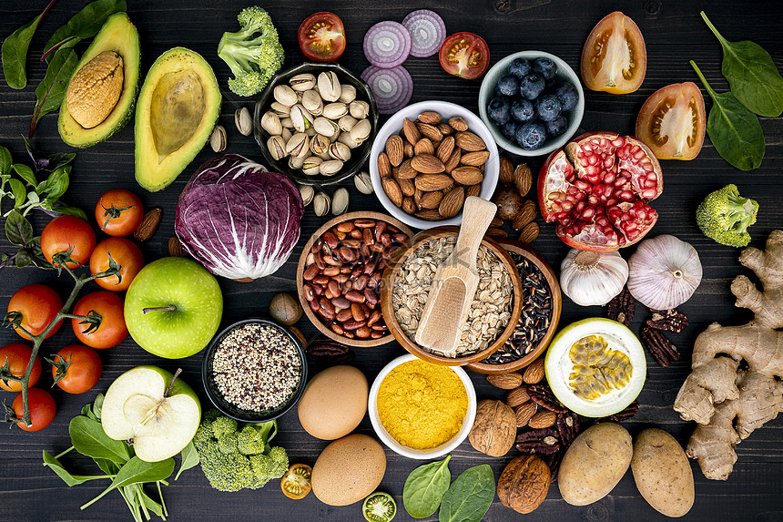

A alimentação saudável é um fato muito importante no nosso cotidiano, pois se trata de uma coisa séria, e que garante o nosso fortalecimento e nutrientes para nosso organismo, investir em alimentos não saudáveis pode ser muito grave pois, pode causar doenças sérias como: diabetes, gastrite, colesterol e hipertensão, para ter uma alimentação saudável é necessário fazer o consumo de água nos intervalos das refeiçoẽs, coma alimentos saudáveis tais como: iogurte, aveia, peixes, legumes e etc
DICAS PARA UMA ALIMENTAÇÃO SAUDÁVELPara ter uma alimentação saudável é necessário evitar o consumo de gorduras e alimentos processados, seja ativo e faça exercícios e procure ter um peso saudável, não passe sede tome bastante água coma menos sal e dê preferência para as gorduras boas alimentos saudáveis
alguns dos alimentos saudaveis sao:banana, abacate, laranja, ovos, salmão e feijão vermelho
Se a pessoa comer os alimentos muito depressa isso pode influenciar para ganho de peso e prejudicar a absorção dos alimentos e nutrientes pelo corpo, comer rápido ainda pode desencadear problemas gastrointestinais como: hérnia ou refluxo gastroesofágico
O que é a alimentação? é um processo no qual os seres vivos assimilam o alimento necessário para a realização de suas atividades vitais. sem nos alimentarmos nosso organismo pode falhar e nos podemos ter sérios problemas de saúde nos próximos anos portanto se alimentar saudavelmente é muito importante